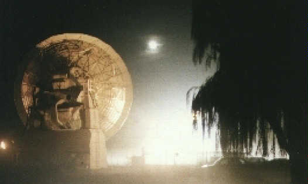

MOONBOUNCE - 1997

Photo of the 12 meter dish during a very misty evening of Moonbounce activity. We set up separate VHF and UHF operating positions out doors to avoid the very high noise of the tracking hydraulics.
This year, we have added a low-speed hydraulic pump which is 20 dB quieter permitting operations within the small room at the base of the antenna.
For more information on MOONBOUNCE activities worldwide, click here.
Return to the Satellite Ground Station